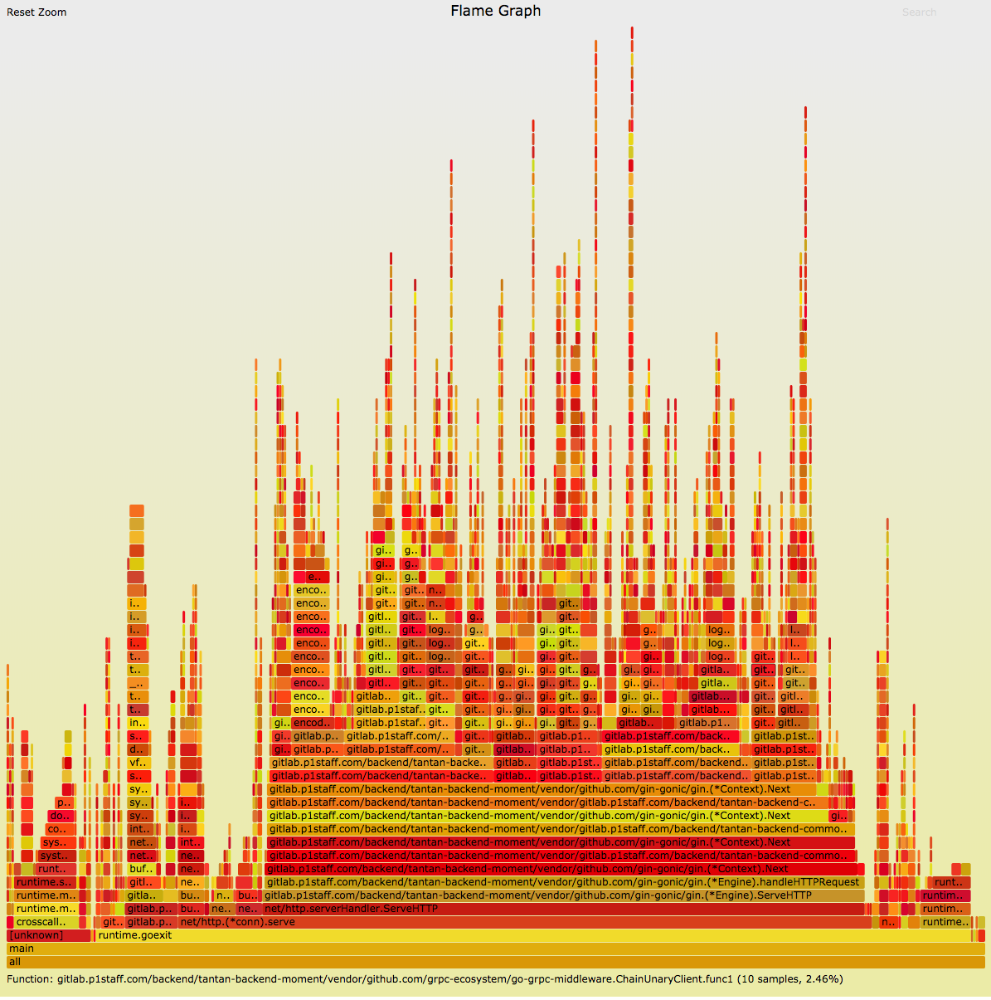

an online example
编译一个可追踪堆栈的二进制
go build main.go
线上的Makefile文件中，加入很多的优化选项，造成无法追踪到函数调用的堆栈，对于分析性能问题有影响。因此，直接使用go build编译。
模拟流量
for (( i=0; i<1000000; i++))
do
curl '127.0.0.1:21268/v1/users/me/settings'
done
生成火焰图
- 生成perf.data
perf record -F 99 -a -g -p 19638 -- sleep 30
perf record用于追踪事件，参数-F指定记录事件的频率99Hz，-g记录下函数调用的堆栈，-p参数指定监控的进程，--sleep参数指定监控的时间范围。
- 转换perf.data
perf script > perf.txt
perf.data是一个二进制文件，需要把它转换为文本文件。
- 展开perf.txt
stackcollapse-perf.pl perf.txt > perf.folded
- 生成svg
flamegraph.pl perf.folded > perf.svg
copy到本地使用浏览器打开svg
scp root@ms-follow-staging1:/root/perf/perf.svg ~/data
